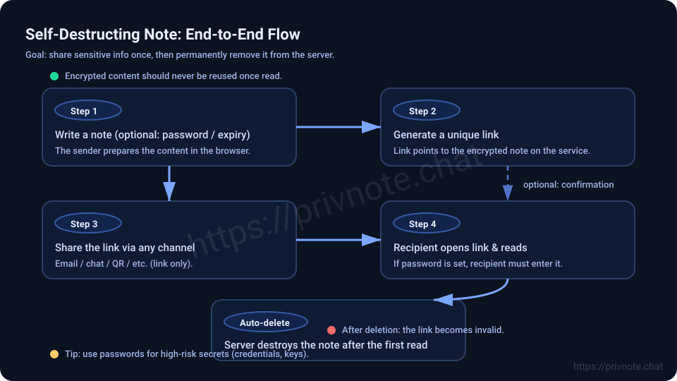

What is Privnote and How to Use Self-Destructing Notes: Complete Guide 2025


What is Privnote?
Privnote is a free, secure messaging service that allows you to send self-destructing notes that automatically delete after being read. Unlike regular text messages or emails that stay in your inbox forever, Privnote messages disappear once the recipient opens them, ensuring your sensitive information doesn't linger in chat history or email accounts.
Whether you need to share a password, send confidential information, or communicate sensitive details, Privnote provides a simple and secure way to ensure your messages don't leave a permanent digital trail.
Key features of Privnote include:
- Self-destructing messages - Notes automatically delete after being read
- No account required - Use Privnote without signing up
- Secure encryption - Your messages are protected during transmission
- Time-based expiration - Set notes to expire after a specific time period
- Password protection - Add an extra layer of security to your notes
Why Use Privnote?
According to recent studies, 67% of people share sensitive information through regular messaging apps, leaving their data vulnerable to hackers and data breaches. Privnote solves this problem by ensuring your messages automatically disappear after being read, leaving no trace behind.
What Are Self-Destructing Notes?
Self-destructing notes are messages that automatically delete themselves after being read or after a set time period. This concept, popularized by services like Privnote, ensures that sensitive information doesn't persist in digital communication channels.
Think of self-destructing notes like a message written on paper that burns up after someone reads it - except in the digital world, where your information is automatically and permanently deleted.
How Self-Destructing Notes Work
When you create a self-destructing note with Privnote:
- You type your message on the Privnote website
- Privnote generates a unique, secure link to your note
- You share the link with the recipient
- When the recipient opens the link, they see your message
- The note is immediately and permanently deleted from Privnote's servers
- The link becomes invalid and can't be accessed again
How to Use Privnote: Step-by-Step Guide
Step 1: Visit Privnote.chat
Go to Privnote.chat in your web browser. You don't need to create an account or sign up - Privnote works immediately without registration.
Step 2: Write Your Message
Type your message in the text box on the Privnote homepage. You can write anything you want - passwords, personal information, confidential notes, or any sensitive content you need to share securely.
Step 3: Set Expiration Options (Optional)
Privnote offers several options for when your self-destructing note should expire:
- After reading - The note deletes immediately when opened
- 1 hour - The note expires 1 hour after creation
- 24 hours - The note expires 24 hours after creation
- 7 days - The note expires 7 days after creation
Step 4: Add Password Protection (Optional)
For extra security, you can add a password to your self-destructing note. The recipient will need to enter this password before they can read your message.
Step 5: Generate Your Secure Link
Click the "Generate Link" button, and Privnote will create a unique, secure link to your self-destructing note. This link is what you'll share with the recipient.
Step 6: Share the Link
Copy the link and send it to your recipient through any method you prefer - email, text message, instant messaging, or any other communication channel. The link is secure and can only be opened once.
Step 7: Recipient Opens the Note
When the recipient clicks the link, they'll see your message. Once they view it, the self-destructing note is permanently deleted from Privnote's servers, and the link becomes invalid.
Common Use Cases for Privnote and Self-Destructing Notes
1. Sharing Passwords
One of the most common uses for Privnote is sharing passwords with family members or colleagues. Instead of sending passwords through regular email or text messages (which stay in your chat history), you can use self-destructing notes to share them securely.
2. Sending Confidential Information
If you need to share sensitive information that shouldn't be stored permanently, Privnote is perfect. The self-destructing note ensures the information disappears after being read, leaving no digital trace.
3. Temporary Access Codes
When sharing temporary access codes, verification codes, or one-time passwords, self-destructing notes from Privnote ensure these codes can't be reused or accessed later.
4. Personal Information
Sharing personal information like social security numbers, bank account details, or other sensitive data is much safer with Privnote's self-destructing notes than through regular messaging.
5. Business Communications
For confidential business information that doesn't need to be permanently stored, Privnote provides a secure way to communicate without leaving a permanent record in email systems or chat logs.
Real-World Example
Sarah needed to share her Netflix password with her college-age daughter. Instead of texting it (which would stay in both their phones forever), she used Privnote to create a self-destructing note. Her daughter received the link, read the password, and the note was automatically deleted - leaving no trace in either of their phones.
Benefits of Using Privnote for Self-Destructing Notes
Privacy Protection
Privnote ensures your messages don't stay in chat history, email accounts, or on servers. Once a self-destructing note is read, it's gone forever.
No Account Required
Unlike many secure messaging services, Privnote doesn't require you to create an account. You can start using self-destructing notes immediately without any registration.
Easy to Use
Privnote is designed to be simple and user-friendly. Creating a self-destructing note takes just seconds, and anyone can use it without technical knowledge.
Secure and Encrypted
Your messages are encrypted during transmission, ensuring that even if someone intercepts the link, they can't read your self-destructing note without the proper access.
Free to Use
Privnote is completely free to use. You can create as many self-destructing notes as you need without any cost or subscription.
Security Features of Privnote
Privnote includes several security features to protect your self-destructing notes:
- End-to-end encryption - Messages are encrypted during transmission
- One-time access - Each self-destructing note can only be viewed once
- Automatic deletion - Notes are permanently deleted after being read
- Password protection - Optional password for additional security
- Time-based expiration - Notes can expire after a set time period
- No server storage - Notes aren't permanently stored on servers
Tips for Using Privnote Effectively
1. Share Links Securely
When sharing your Privnote link, use secure communication channels. Don't post self-destructing note links on public forums or social media.
2. Tell Recipients to Read Immediately
Since self-destructing notes can only be viewed once, make sure your recipient knows to read the message immediately after receiving the link.
3. Use Strong Passwords
If you're using password protection for your Privnote messages, choose strong, unique passwords that are hard to guess.
4. Don't Share Links Publicly
Never share your Privnote links on public platforms. Self-destructing notes are designed for private, one-on-one communication.
5. Verify Recipient Received the Link
Before the self-destructing note expires, confirm that your recipient received and can access the link.
Conclusion: Start Using Privnote Today
Privnote is a powerful tool for sending self-destructing notes that automatically delete after being read. Whether you need to share passwords, send confidential information, or communicate sensitive details, Privnote provides a simple, secure, and free solution.
Key takeaways about Privnote and self-destructing notes:
- Privnote is a free service for creating self-destructing notes
- Self-destructing notes automatically delete after being read
- No account required to use Privnote
- Perfect for sharing sensitive information securely
- Easy to use and completely free
- Messages are encrypted and secure
Ready to start using Privnote? Visit Privnote.chat today and create your first self-destructing note!